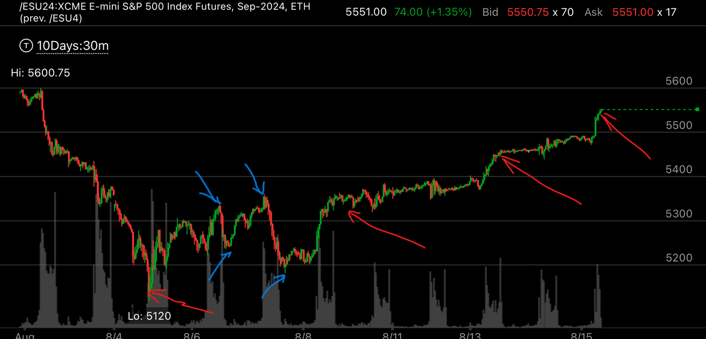

持续前进的走势
- 在一个顶部或者底部的转折的时候，经常会出现持续前进的走势，表示大盘已经反转。
- 持续前进走势，会有两个顶部和底部对，第一个顶部和底部对，时间很短，呈现尖锐状态，第二个则时间很长，幅度包含第一个，也就是高点更高，低点更低。
- 在底部，它会出现高点更高，然而快速下跌，比前一个低点更低，并且在低点出现时间比较久的走势，这个是加速持续前进走势
- 还有一种是缓慢持续前进走势，它的走势在前面和加速持续前进走势是一样的，但是下跌的时间更久，这时呈现不同的状态，但是也是持续前进走势

图示:看四个绿线的指示，它出现了相对的弱势。所以这个表示，它未来会大涨。

图示:两个绿色，很尖锐。两个红色，低点更低，高点更高，注意，它高点只比前面高一点点，不到10个点。几乎平齐。低点要低很多，差了40个点。
红色箭头顶部走低的时候，花的时间很长，这样就不算加速走势，可以预料，它未来会大大低于红色箭头底部。它下跌的时候，在红色箭头底部徘徊很久，第二天开盘大跌，然后才
反弹和反转。